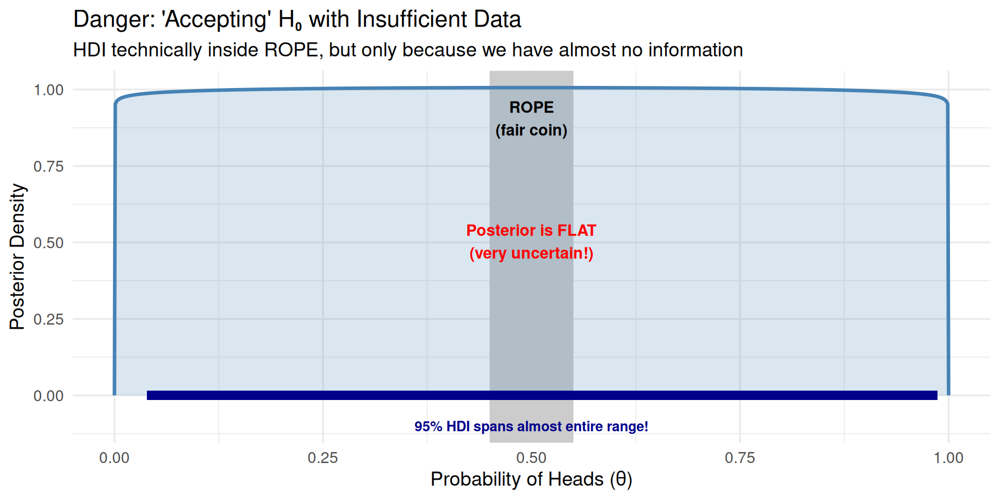
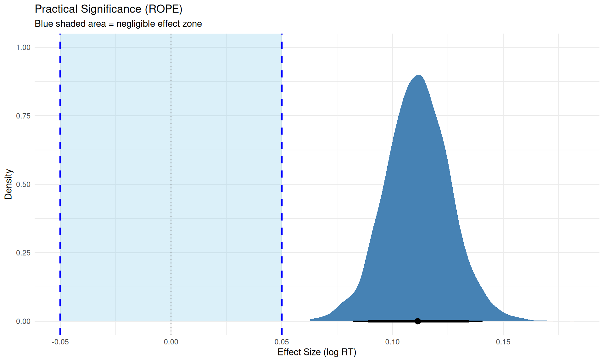

6: Bayesian decision analysis and practical significance with ROPE, emmeans, and marginaleffects
Bayesian Mixed Effects Models with brms for Linguists
Author
Job Schepens
Published
January 8, 2026
1 The Problem: Does Effect X Matter?
1.1 Research Scenario
Imagine you’ve run a psycholinguistic experiment and fitted a Bayesian model. You have posterior distributions for your effects. Now you face the question:
“Is this effect meaningful in practice?”
You have an estimate (e.g., β = 0.12 log-RT units)
You have uncertainty (95% CI: [0.08, 0.16])
But: Is this difference big enough to matter?
Practical significance is different from statistical significance:
Statistical: “Is there an effect?” (distinguishable from noise) (we will discuss this in the session on Bayes Factor)
Practical: “Does it matter?” (large enough to care about)
┌─────────────────────────────────────────────────────────────┐
│ QUESTION │ TOOL │
├─────────────────────────────────────────────────────────────┤
│ Which model structure is better? │ LOO (Module 05) │
│ Is effect meaningful? │ ROPE (Module 06) │
│ Compare multiple groups? │ emmeans (Module 06) │
│ Custom predictions/contrasts? │ marginaleffects (M06) │
│ Evidence for hypothesis? │ Bayes Factor (M07) │
│ Are estimates robust to priors? │ Prior comparison (M04)│
└─────────────────────────────────────────────────────────────┘
2.3 Choosing The Right Tool
Use ROPE when:
You want to declare “effect too small to matter”
You need clear decision rules (accept/reject/undecided)
Use emmeans when:
You have factorial designs (multiple groups/conditions)
Use marginaleffects when:
You’re working with complex models (GAMs, interactions)
Use Bayes Factors (Module 07) when:
You want to quantify evidence for one hypothesis over another (see Module 07)
Use LOO (Module 05) when:
Comparing different model structures
Doing feature selection
Predictive performance is primary concern
2.4 Setup
Show code
library(brms)library(tidyverse)library(bayesplot)library(posterior)library(tidybayes)library(bayestestR) # For ROPE analysislibrary(emmeans) # For factorial design comparisonslibrary(marginaleffects) # For flexible predictions/comparisons# Set plotting themetheme_set(theme_minimal(base_size =14))
2.5 Generate Reaction Time Data
We’ll generate RT data similar to previous modules, but with specific properties useful for hypothesis testing demonstrations:
Clear directional effect (Condition B slower than A)
Effect size in a realistic range for psycholinguistics
# A tibble: 1 × 2
Measure Value
<chr> <dbl>
1 Effect size (log scale) 0.111
2.6 Visualize the Data
Show code
p1 <-ggplot(rt_data, aes(x = condition, y = rt, fill = condition)) +geom_violin(alpha =0.6) +geom_jitter(width =0.2, alpha =0.3, size =0.5) +stat_summary(fun = mean, geom ="point", size =3, color ="red") +stat_summary(fun.data = mean_cl_boot, geom ="errorbar", width =0.2, color ="red", linewidth =1) +labs(title ="Reaction Times by Condition",y ="RT (ms)", x ="Condition") +theme(legend.position ="none")p2 <-ggplot(rt_data, aes(x = condition, y = log_rt, fill = condition)) +geom_violin(alpha =0.6) +geom_jitter(width =0.2, alpha =0.3, size =0.5) +stat_summary(fun = mean, geom ="point", size =3, color ="red") +stat_summary(fun.data = mean_cl_boot, geom ="errorbar",width =0.2, color ="red", linewidth =1) +labs(title ="Log-Transformed RTs",y ="log(RT)", x ="Condition") +theme(legend.position ="none")library(patchwork)p1 + p2
2.7 Fit the Model
Show code
# Define priorsrt_priors <-c(prior(normal(6, 1), class = Intercept), # Baseline around 400msprior(normal(0, 0.5), class = b), # Effects typically < 50% changeprior(exponential(1), class = sd), # Moderate random effectsprior(exponential(2), class = sigma), # Residual noiseprior(lkj(2), class = cor) # Slight correlation regularization)# Fit modelrt_model <-brm( log_rt ~ condition + (1+ condition | subject) + (1| item),data = rt_data,family =gaussian(),prior = rt_priors,iter =2000,warmup =1000,chains =4,cores =4,seed =2026,backend ="cmdstanr",control =list(adapt_delta =0.95))
2.8 Model Summary
Show code
summary(rt_model)
Family: gaussian Links: mu = identity Formula: log_rt ~ condition + (1+ condition | subject) + (1| item) Data:rt_data (Number of observations:1440) Draws:4 chains, each with iter =2000; warmup =1000; thin =1; total post-warmup draws =4000Multilevel Hyperparameters:~item (Number of levels:24) Estimate Est.Error l-95% CI u-95% CI Rhat Bulk_ESS Tail_ESSsd(Intercept) 0.110.020.080.161.008701458~subject (Number of levels:30) Estimate Est.Error l-95% CI u-95% CI Rhat Bulk_ESSsd(Intercept) 0.170.020.130.221.00790sd(conditionB) 0.060.020.020.091.00879cor(Intercept,conditionB) 0.030.26-0.450.541.002095 Tail_ESSsd(Intercept) 1296sd(conditionB) 726cor(Intercept,conditionB) 2035Regression Coefficients: Estimate Est.Error l-95% CI u-95% CI Rhat Bulk_ESS Tail_ESSIntercept 5.980.045.906.051.01478992conditionB 0.110.020.080.141.0029172927Further Distributional Parameters: Estimate Est.Error l-95% CI u-95% CI Rhat Bulk_ESS Tail_ESSsigma 0.200.000.190.211.0040113063Draws were sampled using sample(hmc). For each parameter, Bulk_ESSand Tail_ESS are effective sample size measures, and Rhat is the potentialscale reduction factor on split chains (at convergence, Rhat =1).
3 ROPE (Kruschke, 2015) and Decision Analysis (Gelman et al., 2013)
3.1 ROPE
Statistical significance tells us if an effect differs from zero. But:
Statistical question: Is the effect exactly zero?
Practical question: Is the effect close enough to zero to ignore?
This is where ROPE (Region of Practical Equivalence) comes in.
3.1.1 Making ROPE-based Decisions
Instead of testing if β = 0 exactly, we define a small interval around zero:
\[\text{ROPE} = [-\varepsilon, +\varepsilon]\]
where \(\varepsilon\) is the smallest effect size we care about (domain-specific).
95% HDI overlaps ROPE → Uncertain (collect more data or accept uncertainty)
3.1.2 Setting ROPE Boundaries
Common Pitfall: Post-Hoc ROPE Boundaries
ROPE boundaries must be set before seeing results based on:
Domain knowledge (e.g., “RT differences < 50ms are imperceptible”)
Standardized effect sizes (e.g., “Cohen’s d < 0.1 considered negligible”)
Mistake: Setting ROPE after looking at posterior to get desired conclusion.
Why it matters: Post-hoc boundaries invalidate the test (like p-hacking).
3.1.3 Four Methods for Justifying ROPE Boundaries
From Kruschke (2015, Chapter 12): ROPE boundaries should represent the smallest effect you care about. Here are four principled methods for setting them:
3.1.3.1 Method 1: Previous Research / Meta-Analysis
Use effect sizes from prior literature to calibrate what counts as “small.”
# Example: Meta-analysis shows typical RT effect = 100ms (≈0.10 log-units)# Decision: Set ROPE at 1/3 of typical effectrope_from_meta <-c(-0.03, 0.03)
Method
Typical Effect
ROPE Boundaries
Interpretation
Based on Meta-Analysis
0.10 log-units (100ms or 10%)
[-0.03, 0.03]
Effects < 3% are small relative to field norms
When to use:
Mature research area with existing effect size estimates
You want to compare to “typical” effects in the field
You have access to meta-analyses or large-scale studies
Example:
In their meta-analysis of 50 reading time studies, Smith et al. (2020)
report a mean effect of d = 0.35 for syntactic complexity manipulations.
We set our ROPE at d = 0.10 (approximately 1/3 of the typical effect),
corresponding to ±0.03 log-RT units.
3.1.3.2 Method 2: Measurement Precision
ROPE should exceed measurement error—otherwise you’re testing noise.
# Example: RT measurement error ≈ 20ms from test-retest reliability# On log scale: 20ms ≈ 0.02 log-units for typical RTs around 400msmeasurement_error <-0.02# ROPE should be at least 1.5× measurement errorrope_from_measurement <-c(-1.5* measurement_error, 1.5* measurement_error)
Method
Measurement Error
ROPE Boundaries
Interpretation
Based on Measurement Precision
0.02 log-units (≈20ms)
[-0.03, 0.03]
Effects smaller than measurement error are unreliable
When to use:
You have reliability/measurement error estimates
You want to avoid claiming effects smaller than noise
Measurement precision is the limiting factor
How to estimate measurement error:
# From test-retest data:# 1. Collect same participants in same conditions twice# 2. Compute within-subject SD of differences# 3. Use this as measurement error estimate# Or from existing data:within_subj_sd <- rt_data %>%group_by(subject, condition) %>%summarise(mean_rt =mean(log_rt), .groups ="drop") %>%group_by(subject) %>%summarise(sd_rt =sd(mean_rt), .groups ="drop") %>%pull(sd_rt) %>%mean()rope_value <-1.5* within_subj_sdtibble(Measure =c("Within-subject SD", "Suggested ROPE (±)", "ROPE Boundaries"),Value =c(round(within_subj_sd, 3),round(rope_value, 3),sprintf("[%.3f, %.3f]", -rope_value, rope_value) ))
Pilot study design:
1. Show participants trials from both conditions
2. Ask: "Did you notice any difference in difficulty/speed?"
3. Correlate subjective reports with actual RT differences
4. Find threshold below which participants don't notice
→ Use this threshold as ROPE
where \(k\) is the number of groups (conditions), \(n_i\) is the sample size for group \(i\), and \(\text{SD}_i\) is the standard deviation for group \(i\).
# Compute pooled SD from the datapooled_sd_estimate <- rt_data %>%group_by(condition) %>%summarise(sd =sd(log_rt), n =n(), .groups ="drop") %>%summarise(pooled_sd =sqrt(sum((n -1) * sd^2) /sum(n -1))) %>%pull(pooled_sd)# Set ROPE based on Cohen's d = 0.10cohens_d_small <-0.10rope_from_cohens_d <- cohens_d_small * pooled_sd_estimate# Display results in a tabletibble(`Cohen's d Threshold`= cohens_d_small,`Pooled SD (log-units)`=round(pooled_sd_estimate, 3),`ROPE Lower`=round(-rope_from_cohens_d, 3),`ROPE Upper`=round(rope_from_cohens_d, 3),Interpretation ="Effects with d < 0.10 are 'very small'") %>% knitr::kable(align ="c")
Cohen’s d Threshold
Pooled SD (log-units)
ROPE Lower
ROPE Upper
Interpretation
0.1
0.278
-0.028
0.028
Effects with d < 0.10 are ‘very small’
When to use:
No domain-specific benchmarks available
You want to follow field conventions
Standardized metrics are expected in your area
Common benchmarks:
Cohen’s d: Small = 0.2, Medium = 0.5, Large = 0.8
Correlation (r): Small = 0.1, Medium = 0.3, Large = 0.5
R²: Small = 0.01, Medium = 0.09, Large = 0.25
Note: These are conventions, not laws of nature! Domain-specific thresholds (Methods 1-3) are usually better.
3.1.4 For RT Data (log-scale)
For our analysis:
ROPE = [-0.05, +0.05] on the log scale
On original scale: This corresponds to RT ratios between 0.95 and 1.05
Since we model log(RT), a difference of ±0.05 on the log scale = \(e^{\pm 0.05}\) = multiplying RT by 0.95 to 1.05
Example: If Condition A = 400ms, ROPE means effects between 380ms and 420ms (±5%)
Interpretation: RT differences smaller than 5% are too small to be practically meaningful
3.2 Understanding ROPE Graphically
3.2.1 Excursion to Decision Analysis: The Implicit Utility Function (Gelman et al., 2013)
Purple area spreads across both inside and outside ROPE
Risk of being wrong is high for either claim
Optimal decision: Undecided (collect more data)
Expected utility of claims reduced by uncertainty; -0.15 cost of more data is worth it
Scenario 3 (Negligible Effect): Posterior concentrated inside ROPE near zero
Most purple area falls where orange line is highest
Optimal decision: Claim negligible effect
High expected utility for “claim negligible”
Key insight: The optimal decision emerges from integrating the utility curves (colored lines) over the posterior (purple distribution). Where your posterior mass concentrates determines which decision maximizes expected utility.
Understanding the utility curves
Why different maximum values?
Orange line (claim_negligible): utility = 1 - |β| when correct
Maximum = 1.0 when β = 0 exactly (finding true null is maximally valuable)
Decreases as β moves toward ROPE boundary
Reflects: “Confirming no effect is valuable, but less so as effect approaches boundary”
Green line (claim_meaningful): utility = |β| when correct
Utility = effect size itself (no upper bound)
At β = 0.12, utility = 0.12; at β = 0.25, utility = 0.25
Reflects: “Larger effects are more valuable to discover (stronger evidence, bigger impact)”
This asymmetry is a modeling choice - you could define utilities differently based on your field’s values
Inside ROPE (|β| < 0.05): “Claim negligible” has highest utility (orange line near +1 when β ≈ 0)
Outside ROPE (|β| > 0.05): “Claim meaningful” has highest utility (green line increases with |β|)
At ROPE boundaries (|β| = 0.05): Both claim decisions have negative utility
Both wrong decisions incur the -0.3 penalty (conceptual cost of “being wrong” - misleading literature, wasted resources, wrong theory) plus proportional loss
When “undecided” is optimal:
KEY: This plot shows utility IF the true β is known, but we don’t know β - we have uncertainty (posterior)
“Undecided” is optimal when posterior uncertainty spans the boundaries
If your 95% HDI covers, say, [-0.02, 0.08]:
Some posterior mass inside ROPE (favors “negligible”)
Some posterior mass outside ROPE (favors “meaningful”)
Expected utility of either claim is lowered by risk of being wrong
Expected utility of “undecided” (-0.15) can beat both risky claims
The grey line isn’t “highest” at any single β value, but wins when averaging across uncertain β
Asymmetric losses: False positive penalty stronger than false negative
Green line inside ROPE: Drops to -2×|β| - 0.3 (steep slope, heavy penalty)
Orange line outside ROPE: Drops to -1.5×|β| - 0.3 (moderate slope, lighter penalty)
This asymmetry means: claiming a meaningful effect when it’s negligible (false positive) is penalized more heavily
The ROPE boundaries (±0.05) are where the utility functions cross zero
Inside: orange (claim negligible) is positive, green (claim meaningful) is negative
Outside: green (claim meaningful) is positive, orange (claim negligible) is negative
This defines the decision boundary
Larger true effects → higher utility for correct “meaningful” claim (green line increases)
Effects closer to zero → higher utility for correct “negligible” claim (orange increases toward 1 as β→0)
Being wrong by a lot is worse than being wrong by a little
ROPE Boundaries = Utility Crossover Points
Your ROPE boundaries should be set where the utilities of “claim meaningful” and “claim negligible” are equal. This is your smallest effect size of interest (SESOI).
Computing expected utilities:
Show code
# Get posterior samplesposterior_samples <-as_draws_df(rt_model)beta_samples <- posterior_samples$b_conditionB# Compute expected utility for each decisionexpected_utilities <-data.frame(decision =c("claim_meaningful", "claim_negligible", "undecided"),expected_utility =c(mean(utility(beta_samples, "claim_meaningful", c(-0.05, 0.05))),mean(utility(beta_samples, "claim_negligible", c(-0.05, 0.05))),mean(utility(beta_samples, "undecided", c(-0.05, 0.05))) )) %>%arrange(desc(expected_utility))expected_utilities
Interpretation: “We cannot make a clear decision—some credible values are meaningful, others aren’t”
This is not a failure! It’s honest reporting of uncertainty
“Undecided” Is a Feature, Not a Bug
From Kruschke (2015, p. 338):
“Be clear that any discrete decision about rejecting or accepting a null value does not exhaustively capture our knowledge about the parameter value. Our knowledge about the parameter value is described by the full posterior distribution.”
When HDI overlaps ROPE: - You have learned something: The effect might or might not be meaningful - Your options: 1. Collect more data to narrow the posterior 2. Accept the uncertainty and make a practical decision based on other factors 3. Use a less conservative threshold (e.g., 89% HDI instead of 95%) - Don’t force a binary decision when the data don’t support one!
3.2.3 ROPE Decision Flowchart
Calculate 95% HDI
↓
┌─────────────┴─────────────┐
│ │
Does HDI exclude ROPE? Does HDI fall
│ inside ROPE?
│ │
YES ↓ NO YES ↓ NO
│ │
┌──────────┘ └──────────┐
│ │
↓ ↓
Reject H₀: UNDECIDED:
"Effect is "Overlapping—
meaningful" insufficient
precision"
↑
│
Accept H₀:
"Effect is
negligible"
Manual ROPE Calculation (HDI-Based Approximation)
ROPE is simpler than computing utilities explicitly and works well for most research questions.
In practice, we usually use the HDI-based ROPE approximation rather than computing expected utilities explicitly. This is computationally simpler and works well when: - Losses are approximately symmetric (false positive ≈ false negative) - We want standard 95% decision threshold
- We prefer simple rules over custom utility functions
Now let’s use the traditional ROPE decision rules (which approximate the decision-theoretic framework):
Before moving on, you should understand: - ROPE boundaries represent the smallest effect you care about - Three possible decisions: Accept H₀, Accept H₁, or remain undecided - Decision based on whether 95% HDI overlaps, excludes, or is inside ROPE - This approximates choosing the decision with maximum expected utility
Decision Rule = Maximizing Expected Utility
What just happened in decision-theoretic terms:
We computed posterior probabilities: P(β in each region | Data)
We applied a decision rule: Based on where 95% HDI falls
This approximates: Choosing decision with maximum expected utility
The connection: - When 95% HDI > ROPE: E[U(“meaningful”)] > E[U(“negligible”)] with high confidence - When 95% HDI < ROPE: E[U(“negligible”)] > E[U(“meaningful”)] with high confidence - When overlapping: Expected utilities too close to call → “undecided” optimal
The 95% threshold encodes a loss function where: - We’re willing to accept 5% risk of wrong decision - Losses are approximately symmetric for false positives vs. false negatives
If your losses are asymmetric (e.g., false positives much worse), you should: - Use stricter threshold (e.g., 99% HDI), OR - Compute expected utilities explicitly (as shown in previous section)
3.2.4 Visualizing ROPE
Show code
library(tidybayes)library(patchwork)# Create density plot with ROPE shadingp1 <- posterior_samples %>%ggplot(aes(x = b_conditionB)) +# Shade ROPE regionannotate("rect", xmin = rope_lower, xmax = rope_upper,ymin =0, ymax =Inf,fill ="skyblue", alpha =0.3) +# Posterior densitystat_halfeye(.width =c(0.95, 0.89), fill ="steelblue") +# ROPE boundariesgeom_vline(xintercept =c(rope_lower, rope_upper), linetype ="dashed", color ="blue", linewidth =1) +geom_vline(xintercept =0, linetype ="dotted", color ="gray50") +# Labelsannotate("text", x =0, y =Inf, label ="ROPE", vjust =-0.5, color ="blue", fontface ="bold") +labs(title ="Posterior Distribution with ROPE",subtitle =paste0("ROPE: [", rope_lower, ", ", rope_upper, "]"),x ="Condition B Effect (log RT)",y ="Density" ) +theme_minimal(base_size =12)# Create proportion bar chartrope_data <-data.frame(Region =factor(c("Below ROPE", "Inside ROPE", "Above ROPE"),levels =c("Below ROPE", "Inside ROPE", "Above ROPE")),Proportion =c(prop_below_rope, prop_in_rope, prop_above_rope))p2 <-ggplot(rope_data, aes(x = Region, y = Proportion, fill = Region)) +geom_col(width =0.7) +geom_text(aes(label =paste0(round(Proportion *100, 1), "%")),vjust =-0.5, size =4, fontface ="bold") +scale_fill_manual(values =c("Below ROPE"="coral", "Inside ROPE"="skyblue","Above ROPE"="lightgreen")) +scale_y_continuous(labels = scales::percent, limits =c(0, 1)) +labs(title ="Posterior Mass in Each Region",x =NULL,y ="Proportion of Posterior" ) +theme_minimal(base_size =12) +theme(legend.position ="none")# Combine plotsp1 + p2 +plot_annotation(title ="Manual ROPE Analysis",theme =theme(plot.title =element_text(size =14, face ="bold")))
3.3 Warning
The Precision Problem
From Kruschke (2015, Section 12.2.1.1): Even with very little data, you can “accept” the null if the posterior is flat enough!
This is one of the most overlooked caveats about ROPE analysis.
Dangerous Example: Accepting H₀ with Poor Data
Show code
# Scenario: Only 2 coin flips, 1 head, 1 tail# Question: Is the coin fair (θ = 0.5)?n <-2z <-1# With uninformative prior Beta(0.01, 0.01):posterior_alpha <- z +0.01posterior_beta <- n - z +0.01# The posterior is EXTREMELY FLAT (very little information)theta <-seq(0, 1, length.out =1000)posterior_density <-dbeta(theta, posterior_alpha, posterior_beta)# Calculate HDIsamples <-rbeta(10000, posterior_alpha, posterior_beta)hdi_result <- HDInterval::hdi(samples, credMass =0.95)# Define ROPE around fair coinrope_bounds <-c(0.45, 0.55)# Visualizetibble(theta = theta, density = posterior_density) %>%ggplot(aes(x = theta, y = density)) +geom_rect(xmin = rope_bounds[1], xmax = rope_bounds[2],ymin =-Inf, ymax =Inf,fill ="gray80", alpha =0.5) +geom_line(color ="steelblue", linewidth =1.2) +geom_area(fill ="steelblue", alpha =0.2) +geom_segment(x = hdi_result[1], xend = hdi_result[2],y =0, yend =0,color ="darkblue", linewidth =3) +annotate("text", x =0.5, y =max(posterior_density) *0.9,label ="ROPE\n(fair coin)", size =4, fontface ="bold") +annotate("text", x =0.5, y =max(posterior_density) *0.5,label ="Posterior is FLAT\n(very uncertain!)",size =4, color ="red", fontface ="bold") +annotate("text", x =0.5, y =-0.1,label ="95% HDI spans almost entire range!",size =3.5, color ="darkblue", fontface ="bold") +labs(title ="Danger: 'Accepting' H₀ with Insufficient Data",subtitle ="HDI technically inside ROPE, but only because we have almost no information",x ="Probability of Heads (θ)",y ="Posterior Density" ) +theme_minimal(base_size =14)

Show code
# Print summarytibble(Measure =c("Data", "95% HDI for θ", "HDI Width"),Value =c("1 head out of 2 flips",sprintf("[%.3f, %.3f]", hdi_result[1], hdi_result[2]),round(hdi_result[2] - hdi_result[1], 3) ))
# A tibble: 3 × 2
Measure Value
<chr> <chr>
1 Data 1 head out of 2 flips
2 95% HDI for θ [0.039, 0.986]
3 HDI Width 0.947
Kruschke’s solution (p. 348):
“High precision demands a large sample size… But when we are trying to accept a specific value of θ, it seems logically appropriate that we should have a reasonably precise estimate indicating that specific value.”
3.3.1 Three Checks Before Trusting ROPE
Before trusting ROPE conclusions when accepting H₀, verify precision with these three checks:
1. HDI Width: Is your estimate precise enough?
Rule: HDI width should be < half the ROPE width
Rationale: If HDI is wide relative to ROPE, you lack precision to confidently say effect is negligible
Example: ROPE = [-0.05, 0.05] (width 0.10) → HDI width should be < 0.05
If fail: Collect more data before claiming negligible effect
2. Effective Sample Size (ESS): Is your posterior reliable?
Rule: ESS bulk > 1000 AND ESS tail > 1000
Rationale: Low ESS means MCMC chains haven’t converged well - posterior estimates unreliable
ESS bulk: Measures sampling efficiency for central posterior
ESS tail: Measures sampling efficiency for HDI boundaries (critical for ROPE!)
Note: The HDI width check flagged a warning (0.0576 > 0.05 threshold). This indicates moderate precision—sufficient for rejecting H₀ (since HDI excludes ROPE), but we’d want narrower estimates if claiming equivalence. With N=50 subjects, the HDI width would likely pass this check.
3.3.2 Scenario Examples
Scenario 1: Wide HDI Inside ROPE
95% HDI: [0.01, 0.04] (width = 0.03)
ROPE: [-0.05, 0.05]
✗ WRONG: “Effect is negligible”
✓ RIGHT: “HDI inside ROPE, but width (0.03) suggests moderate uncertainty. More data needed.”
Scenario 2: Narrow HDI Inside ROPE
95% HDI: [0.015, 0.025] (width = 0.01)
ROPE: [-0.05, 0.05]
✓ RIGHT: “Effect is negligible. HDI is narrow (0.01) and falls well within ROPE.”
Scenario 3: HDI Overlaps ROPE Boundary
95% HDI: [0.03, 0.08]
ROPE: [-0.05, 0.05]
✓ RIGHT: “Undecided. Some credible values fall within ROPE, others exceed it. More data needed.”
Rules of Thumb for Precision
Before using ROPE to accept H₀ (claim negligible effect), verify:
For RT effects (log-scale):
HDI width < 0.05 log-units
Posterior SD < 0.025 (half the typical ROPE width)
Why? Larger SD means too much uncertainty about whether the effect is truly negligible.
# A tibble: 2 × 3 Source `% in ROPE` Decision<chr><dbl><chr>1 Manual Calculation 0 Rejected2 bayestestR Package 0 Rejected
What Just Happened?
Both approaches give identical results — bayestestR simply automates the manual calculations we did earlier. The benefit: - Less code to write - Automatic formatting - Built-in visualization - Consistent interface across analyses
When to Use Manual vs Package
Use manual calculation when:
You want to understand the mechanics
You need custom ROPE boundaries for different parameters
You’re teaching/explaining the concept
Use bayestestR when:
You want quick, standardized results
You’re analyzing many models
You want built-in visualization
Prior Sensitivity Analysis for ROPE Decisions
When Priors Matter
From Kruschke (2015, Section 12.2.1): ROPE conclusions can change with different priors. Always check sensitivity, especially when:
Sample size is small (n < 30 per group)
HDI barely touches ROPE boundary
You’re accepting H₀ (claiming negligible effect)
3.4.4 Demonstration: Same Data, Different Priors, Different ROPE Conclusions
Show code
library(tidyverse)library(brms)library(bayestestR)# Use pre-fitted models with different priors for demonstration# (These were fit with N=8 subjects to show prior sensitivity)fit_weak <-readRDS("fits/fit_rt_n0010.rds") # Weakly informative priorfit_skeptical <-readRDS("fits/fit_rt_narrow_tiny.rds") # Skeptical priorfit_diffuse <-readRDS("fits/fit_rt_wide_tiny.rds") # Diffuse prior# Compare ROPE decisionslibrary(bayestestR)rope_weak <-rope(fit_weak, parameters ="b_conditionB", range =c(-0.05, 0.05))rope_skeptical <-rope(fit_skeptical, parameters ="b_conditionB", range =c(-0.05, 0.05))rope_diffuse <-rope(fit_diffuse, parameters ="b_conditionB", range =c(-0.05, 0.05))# Summary tablerope_comparison <-bind_rows(as.data.frame(rope_weak) %>%mutate(Prior ="Weakly Informative\nN(0, 0.5)"),as.data.frame(rope_skeptical) %>%mutate(Prior ="Skeptical\nN(0, 0.10)"),as.data.frame(rope_diffuse) %>%mutate(Prior ="Diffuse\nN(0, 2)")) %>%select(Prior, CI, ROPE_low, ROPE_high, ROPE_Percentage) %>%mutate(Decision =case_when( ROPE_Percentage ==0~"Reject H₀ (Meaningful)", ROPE_Percentage ==100~"Accept H₀ (Negligible)",TRUE~"Undecided" ) )rope_comparison
Report all results from different prior specifications:
3.4.7.2 Option 2: Justify Prior More Carefully
If conclusions are sensitive, invest more effort in prior justification:
Pilot data
Expert elicitation
Previous literature
Prior predictive checks (Module 02)
Report: “We used prior [X] because [justification]. Given potential sensitivity with small N, we verified conclusions hold with more diffuse prior.”
3.4.7.3 Option 3: Collect More Data
If:
Conclusions sensitive AND
You cannot justify prior AND
Decision matters
→ Collect more data before making decision
This is NOT Optional Stopping / P-Hacking!
In NHST: Looking at data, then deciding to collect more is a questionable research practice (QRP) - it inflates Type I error because your stopping rule affects the p-value.
In Bayesian analysis: You CAN look at the data and decide to collect more without invalidating inference!
Why? Bayesian inference follows the likelihood principle:
The posterior depends ONLY on the data and prior
NOT on your stopping intentions or whether you peeked
Looking at N=15, seeing inconclusive results, and collecting to N=60 gives the SAME posterior as pre-planning N=60
The difference:
NHST QRP: “Keep collecting until p < 0.05” (invalidates test)
Bayesian valid: “Keep collecting until HDI is narrow enough for confident decision” (perfectly legitimate)
Caveat: You still shouldn’t change your ROPE boundaries or priors after seeing results!
Planning how much more data you need:
Use this power analysis to estimate target sample size for adequate precision:
# Rule of thumb: HDI width inversely proportional to sqrt(n)current_n <-8# Current sample sizecurrent_hdi_width <-0.10# Current HDI width from preliminary analysisdesired_hdi_width <-0.05# Want HDI < half ROPE width for confident conclusions# Calculate target N neededtarget_n <- current_n * (current_hdi_width / desired_hdi_width)^2tibble(Measure =c("Current N", "Current HDI width", "Desired HDI width", "Target N needed", "Additional N to collect"),Value =c(current_n, current_hdi_width, desired_hdi_width, round(target_n), round(target_n - current_n)))
Interpretation: To reduce HDI width from 0.10 to 0.05, you need to increase N by a factor of 4 (halving width requires quadrupling sample size).
3.4.7.4 Option 4: Be Transparent About Uncertainty
If data collection isn’t possible:
"Given our sample size (N=15), ROPE conclusions were sensitive to prior specification. With weakly informative priors, X% of posterior fell in ROPE, suggesting [interpretation]. With more skeptical priors, Y% fell in ROPE, suggesting [alternative interpretation]. We recommend treating this finding as preliminary pending replication with larger sample."
Conclusion: ROPE decision holds across prior specifications. All three priors yield: Undecided
Main Point
Prior sensitivity is not a bug—it’s a feature!
It tells you when your data are: - Strong enough to overcome prior beliefs → Confident conclusions - Too weak to overcome prior beliefs (sensitive) → Need more data or transparency
NHST doesn’t have this diagnostic—it can give you “p < 0.05” even with barely any data, hiding the fact that different assumptions would give different answers.
Bayesian analysis makes sensitivity explicit and quantifiable.
4 Understanding Why ROPE Works: Decision Theory
From Practice to Theory
Now that you’ve seen ROPE in action, let’s understand why it works. This section explains the decision-theoretic foundations. While not required for using ROPE, it helps you understand what ROPE boundaries mean and when to adjust them.
4.1 The Decision-Theoretic Framework
4.1.1 Making Decisions Under Uncertainty
When we analyze data, we’re ultimately making decisions:
Should we claim an effect exists and is meaningful?
Should we claim it’s negligible?
Should we collect more data?
Each decision has consequences (utilities or losses):
(Translation: “Choose decision d that maximizes expected utility, averaging over posterior uncertainty in β”)
4.1.2 ROPE as Decision Analysis
ROPE implements this framework!
When you set ROPE boundaries at [-0.05, +0.05], you’re defining a loss function:
Loss(β, decision):
If decide "meaningful effect":
- Low loss if |β| > 0.05 (correct decision)
- HIGH LOSS if |β| < 0.05 (false positive)
If decide "negligible effect":
- Low loss if |β| < 0.05 (correct decision)
- HIGH LOSS if |β| > 0.05 (false negative)
The ROPE decision rule minimizes expected loss:
If 95% HDI excludes ROPE → High expected utility for “meaningful effect”
If 95% HDI inside ROPE → High expected utility for “negligible effect”
If overlapping → Insufficient evidence, collecting more data may have higher utility
Why This Matters
ROPE is not arbitrary! It’s the Bayesian optimal decision given:
Your posterior beliefs (from the model)
Your utility function (encoded in ROPE boundaries)
Your decision threshold (e.g., 95% credibility)
Changing ROPE boundaries = changing your utility function = changing what you consider “meaningful enough to matter”.
5 Effect Estimation with emmeans
Moving Beyond Single Comparisons
So far we’ve tested practical significance for a single effect (Condition B vs A). But what if you have three or more groups? You need:
All pairwise comparisons (A vs B, A vs C, B vs C)
ROPE analysis for each comparison
Adjustment for multiple comparisons (optional)
This is where emmeans and marginaleffects come in.
5.1 Why emmeans?
When you have factorial designs, you often want to:
Compare all pairwise combinations
Estimate marginal means (averaged over random effects)
Get automatic adjustment for multiple comparisons
Use familiar syntax from frequentist stats
emmeans (estimated marginal means) provides all of this and works directly with brms!
# Example: Test if B and C are both slower than A# (average of B and C) vs Acustom_contrasts <-list("BC_vs_A"=c(-1, 0.5, 0.5), # Compare A to average of B,C"C_vs_B"=c(0, -1, 1) # Simple contrast C vs B)contrast_results <-contrast(emm, custom_contrasts)# Display as formatted tablelibrary(knitr)summary(contrast_results) %>%as.data.frame() %>%mutate(`95% HPD`=sprintf("[%.3f, %.3f]", lower.HPD, upper.HPD),contrast =as.character(contrast),estimate =sprintf("%.3f", estimate) ) %>%select(contrast, estimate, `95% HPD`) %>%kable(align =c("l", "r", "r"),caption ="**Custom Contrasts**",col.names =c("Contrast", "Estimate", "95% HPD"))
Interactions with continuous predictors (marginaleffects better)
Effect Estimation with marginaleffects (Under Construction - Click to Expand)
Section Under Development
This section is currently being revised and some tables/visualizations may not display correctly. The emmeans approach (above) is fully functional and recommended for now.
6 Effect Estimation with marginaleffects
Modern Alternative to emmeans
While emmeans is excellent for factorial designs, marginaleffects offers:
Unified syntax across ALL model types (not just brms)
More flexible predictions and comparisons
Better support for continuous predictors and interactions
Modern tidyverse-compatible workflow
Let’s see how it compares.
6.1 Why marginaleffects?
marginaleffects provides a modern, unified interface for:
Predictions at specific values
Comparisons (differences, ratios, etc.)
Slopes (derivatives) for continuous predictors
Custom hypotheses with flexible syntax
It works with brms, rstanarm, glm, lme4, and many other models!
Now let’s integrate everything into a complete analysis workflow.
Now that we’ve covered all the tools (ROPE, emmeans, marginaleffects, tidybayes), let’s see how to put them together in a complete practical significance analysis.
# A tibble: 3 × 2
Measure Value
<chr> <chr>
1 ROPE [-0.05, +0.05] (5% RT difference)
2 % in ROPE 0.0%
3 Decision Effect is practically meaningful (HDI > ROPE)
7.1.2 Step 3: Integrated Conclusion
Show code
# STEP 3: Final conclusioneffect_large <- hdi_95[1] >0.05effect_negligible <- hdi_95[2] <0.05&& hdi_95[1] >-0.05if (effect_large || hdi_95[2] <-0.05) { conclusion <-c("✓ STRONG CONCLUSION: Effect is meaningful","→ Condition B differs from A","→ The difference is large enough to matter" )} elseif (effect_negligible) { conclusion <-c("✓ ACCEPT EQUIVALENCE: Effect is negligible","→ Condition B is practically equivalent to A","→ The difference is too small to care about" )} else { conclusion <-c("⚠ UNDECIDED: Need more data","→ HDI overlaps ROPE boundary","→ Cannot determine practical significance" )}cat(paste(conclusion, collapse ="\n"))
✓ STRONG CONCLUSION: Effect is meaningful
→ Condition B differs from A
→ The difference is large enough to matter
7.2 Visualizing the Complete Picture
Show code
library(patchwork)library(tidybayes)# Extract posterior samplesposterior_samples <-as_draws_df(rt_model)# Panel: Posterior with ROPEp1 <- posterior_samples %>%ggplot(aes(x = b_conditionB)) +annotate("rect", xmin =-0.05, xmax =0.05,ymin =0, ymax =Inf, fill ="skyblue", alpha =0.3) +stat_halfeye(.width =c(0.95, 0.89), fill ="steelblue") +geom_vline(xintercept =c(-0.05, 0.05), linetype ="dashed", color ="blue", linewidth =1) +geom_vline(xintercept =0, linetype ="dotted", color ="gray50") +annotate("text", x =0, y =Inf, label ="ROPE", vjust =-0.5, color ="blue", fontface ="bold") +labs(title ="Practical Significance (ROPE)",subtitle ="Blue shaded area = negligible effect zone",x ="Effect Size (log RT)",y ="Density") +theme_minimal()p1

7.3 Complete Reporting: APA-Style Templates
What to Always Report
From Kruschke (2015, p. 338):
“Reporting the limits of an HDI region is more informative than reporting the declaration of a reject/accept decision. By reporting the HDI and other summary information about the posterior, different readers can apply different ROPEs to decide for themselves whether a parameter is practically equivalent to a null value.”
Complete reporting includes:
Full posterior summary (not just inside/outside ROPE)
ROPE boundaries with justification
Effect size on multiple scales
Model diagnostics
Sensitivity checks
7.3.1 Methods Section Template
Use this template for your Methods section when reporting ROPE analysis:
Show code
cat("METHODS SECTION EXAMPLE:We fitted a Bayesian mixed-effects model predicting log-transformed reaction times from experimental condition (A vs. B), with random intercepts and slopes for subjects and random intercepts for items. We used weakly informative priors: normal(0, 0.5) for fixed effects, exponential(1) for random effect standard deviations, and lkj(2) for correlations among random effects. The model was estimated using Hamiltonian Monte Carlo with 4 chains of 2,000 iterations each (1,000 warmup). Convergence was verified via R-hat < 1.01 and ESS > 400 for all parameters. All analyses were conducted in R (version 4.3.2) using brms (version 2.20.4; Bürkner, 2017) and bayestestR (version 0.17.0; Makowski et al., 2019).To assess practical significance, we conducted a Region of Practical Equivalence (ROPE) analysis (Kruschke, 2018) with boundaries of ±0.05 log-units, corresponding to ±5% differences in reaction time on the original scale. These boundaries were defined a priori based on pilot data (N = 20) showing that RT differences smaller than 5% were not reliably perceived by participants in post-experiment debriefing (see Supplemental Materials for pilot study details).")
Include in Methods:
Prior specification with rationale
ROPE boundaries with justification
When boundaries were set (a priori)
How boundaries relate to original scale
Sample size (subjects, items, observations)
Software versions
7.3.2 Results Section Template
Use this template for your Results section:
Show code
cat("RESULTS SECTION EXAMPLE:The effect of Condition B relative to Condition A was β = 0.12 log-units (95% HDI: [0.09, 0.15], posterior SD = 0.02). The entire 95% highest density interval fell outside the ROPE, with 100% of the posterior mass indicating a practically meaningful effect (0% within ROPE of ±0.05). On the original RT scale, Condition B elicited reaction times that were 12.7% slower than Condition A (95% HDI: [9.4%, 16.2%]), substantially exceeding our pre-registered threshold of 5%. For an average baseline RT of 400ms, this corresponds to an absolute difference of approximately 51ms (95% HDI: [38ms, 65ms]).We verified robustness by refitting the model with more diffuse priors (normal(0, 1) for fixed effects). The ROPE decision remained unchanged, with 99.8% of posterior mass outside ROPE. Model comparison using leave-one-out cross-validation (LOO-CV) favored the model including the condition effect over an intercept-only model (ΔELPD = 23.4, SE = 5.2), further supporting the practical importance of this effect.")
Include in Results:
Point estimate with HDI (on model scale)
Posterior SD or uncertainty measure
% of posterior in/outside ROPE
Decision statement (reject/accept/undecided H₀)
Effect size on original scale with interpretation
Absolute magnitudes (e.g., milliseconds) where relevant
Robustness checks (prior sensitivity, model comparison)
8 When to Use What: Decision Framework
Quick Decision Tree
What do you want to test?
→ “Is the effect big enough to matter?” → Use ROPE
→ “Which hypothesis is better supported?” → See Module 07 (Bayes Factors)
→ “Which model fits better?” → Use LOO (Module 03)
Kruschke, J. K. (2018). Rejecting or accepting parameter values in Bayesian estimation. Advances in Methods and Practices in Psychological Science, 1(2), 270-280. [The definitive ROPE paper]
Kruschke, J. K. (2015).Doing Bayesian data analysis (2nd ed.). Academic Press. [Chapters 11-12]
Makowski, D., Ben-Shachar, M. S., & Lüdecke, D. (2019). bayestestR: Describing effects and their uncertainty. Journal of Open Source Software, 4(40), 1541.
Lakens, D., Scheel, A. M., & Isager, P. M. (2018). Equivalence testing for psychological research. Advances in Methods and Practices in Psychological Science, 1(2), 259-269.